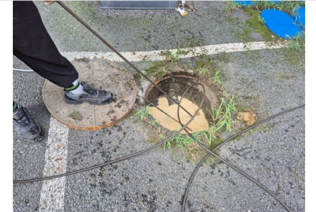
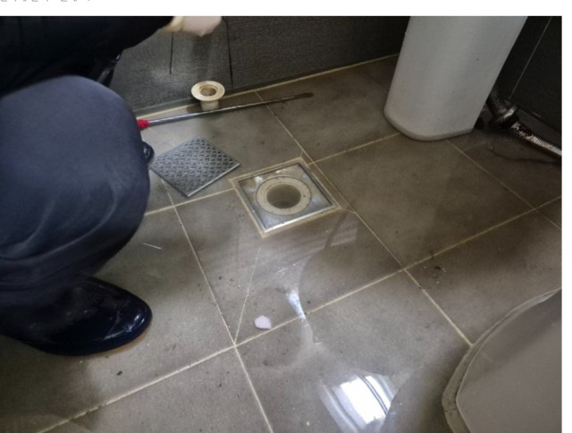

관련 시공사례
하수구·메인관 막힘 해결 사례

카메라 진단 → 고압세척안성 공도읍 원룸 상가 메인 하수관 역류 해결
안성 공도읍 · 비만 오면 역류하던 원룸 상가 메인 하수관, 카메라 점검으로 이물질·석회질 확인 후 고압세척으로 배수 효율 회복

샤프트 + 카메라 동시진행송탄 원룸 화장실 바닥 배수구 막힘 해결
송탄 · 변기 옆 바닥 배수구가 막혀 역류하던 원룸 화장실, 머리카락·비누 찌꺼기를 샤프트로 제거하고 카메라로 실시간 확인
 내시경 → 이물질제거·배관보수·경사조정
내시경 → 이물질제거·배관보수·경사조정평택·안성·천안·오산·화성 회사 우수관 막힘 해결
회사 건물 우수관(빗물 배수관)의 이물질·배관 손상·경사 부족까지 겹친 복합 문제를 근본 해결